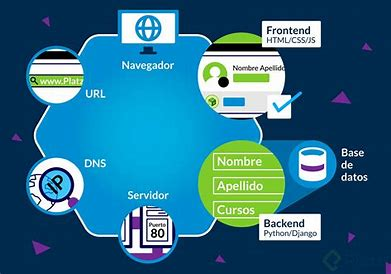
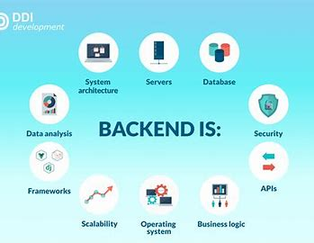
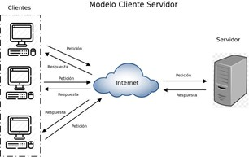
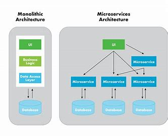
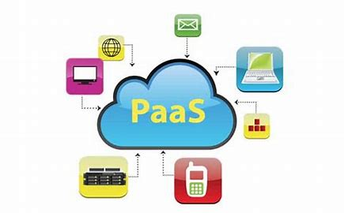
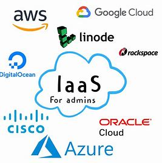

Es importante señalar la distinción entre estas dos palabras que se usan cada vez más de manera indistinta.
Vallejos (2017) describe que Internet "Es una colección de miles de redes de computadora, también conocida como la súper autopista de la información" (pp. 2). Al ser una red de computadoras conectadas que abarca todo el mundo, ninguna empresa es su dueña; es producto de un esfuerzo cooperativo regido por un sistema de normas y reglas, cuyo propósito principal es compartir información.Internet es una red global de computadoras interconectadas que permite la comunicación y el intercambio de información en todo el mundo. Es una red descentralizada, lo que significa que no hay una única entidad u organización que la controle. En cambio, está compuesta por muchas redes interconectadas, cada una con sus propias direcciones únicas, protocolos y reglas para la comunicación.

Por otra parte, Robbins (2018) establece que la Web (World Wide Web, o www) es solo una de las formas en que la información puede compartirse a través de Internet. Es la única en la que permite que los documentos se vinculen entre sí mediante enlaces de hipertexto, formando así una enorme "red" de información conectada. (pp. 21)
Web App, o "Aplicación Web", es una versión mejorada de la página web, es una interpretación optimizada y ajustable a cualquier dispositivo móvil o tableta e independiente de los navegadores y sistemas operativos. No requiere de instalación, debido a que se carga en el servidor web Existen diferencias sustanciales entre las páginas web y las aplicaciones web: “- Las páginas o sitios web son estáticos, lo que quiere decir que no se actualizan a diario. En cambio, estas apps son mucho más dinámicas y están cambiando constantemente. - La aplicación web depende de la interacción del usuario para lograr su objetivo, mientras que la página web solo proporciona información al mismo y no se relaciona con él concretamente. - La página web se construyen utilizando HTML, CSS, y tal vez un poco de JavaScript. La Web App también pero a esto le añade el uso de lenguajes de programación como PHP, Ruby o Python, y marcos como Rails, Django y Scriptcase
El desarrollo Web se divide en el desarrollo de dos partes complementarias: el frontend y el backend.
Esta parte que engloba y muestra todo el trabajo de diseño web y, por lo general, hace uso de tres lenguajes diferentes: HTML, CSS y JavaScript, los cuales se describen brevemente a continuación: HTML (Hypertext Markup Languaje). Lenguaje de marcas de hipertexto, es el lenguaje utilizado para crear documentos de páginas web. Hoy en día se usan algunas versiones de HTML: HTML 4.01 es el más firmemente establecido y el HTML5 más nuevo y robusto está ganando fuerza y soporte para el navegador. CSS (Cascade Style Sheets). Mientras el HTML es usado para describir el contenido en una página web, son las Hojas de Estilo en Cascada (CSS) las que describen cómo debería verse ese contenido. En el negocio del diseño web, el aspecto de la página se conoce como su presentación. Eso significa fuentes, colores, imágenes de fondo, interlineado, diseño de página, etc. todo controlado con CSS JavaScript. JavaScript es un lenguaje de secuencias de comandos que se utiliza para agregar interactividad y comportamientos a las páginas web, incluidos estos (solo por nombrar algunos):
El backend es la capa que accede a los datos y software en general para su comunicación; es la parte trasera de cualquier página web. “Se trata de todo el conjunto del desarrollo que se encarga de que una página funcione y de que lo haga como lo hace, pero al mismo tiempo es invisible para el usuario, que solo ve lo visual y gráfico”. (NeoAttack, 2019)
De acuerdo a Robbins (2018), algunos sitios web simples son colecciones de documentos HTML estáticos y archivos de imágenes, pero la mayoría de los sitios comerciales tienen una funcionalidad más avanzada, como manejo de formularios, páginas generadas dinámicamente, carritos de compras, sistemas de administración de contenido, bases de datos, etc. Estas funciones son manejadas por aplicaciones web que se ejecutan en el servidor. Existen varios lenguajes de programación y frameworks(enumerados entre paréntesis) que se utilizan para crear aplicaciones web, que incluyen: -PHP (Laravel, CodeIgniter, Symfony, CakePHP) -Python (Django, TurboGears) -Ruby (Ruby on Rails, Sinatra) -JavaScript (Angular, Node.js, Rhino, SpiderMonkey) Hosting es el proceso de alojar o almacenar un sitio web en un servidor. El servidor es un ordenador conectado a internet que responde a las solicitudes de los clientes y envía las páginas web al navegador del usuario.
muchas formas en que la información se puede pasar entre las computadoras, incluido el correo electrónico, la transferencia de archivos (FTP) y muchos modos más especializados sobre los que se construye Internet. Estos métodos estandarizados para transferir datos o documentos a través de una red se conocen como protocolos.
Robbins (2018), en su publicación Learning Web Design, recomienda que, si trabajamos en un sitio comercial o si tomamos muy en serio nuestra presencia personal en la web, debemos alquilar espacio en el servidor de un servicio de alojamiento profesional (“hosting”, en inglés). Para lo cual se estará pagando por un espacio en uno de sus servidores, una cantidad de ancho de banda por mes y soporte técnico. También se pueden incluir servicios adicionales como listas de correo, carritos de compras, etc. El servicio de alojamiento es responsable de asegurarse de que nuestro sitio esté en línea y disponible las 24 horas del día, los 7 días de la semana.”
A veces, cuando se utiliza una URL que comienza con https://, esto es una indicación de que es una transacción de servidor segura. Los servidores seguros tienen dispositivos de cifrado especiales que ocultan contenido delicado, como números de tarjetas de crédito, mientras se transfieren desde y hacia el navegador. Es recomendable hacer uso de éstos al realizar compras en línea para agregarle seguridad. (Robbins, 2018, pp. 24)
Es un modelo de diseño de software en el que las tareas se reparten entre los proveedores de recursos o servicios, llamados servidores, y los demandantes, llamados servidores. (Wikipedia, 2013) En la ilustración 6, podemos observar como varios clientes realizan peticiones a un servidor a través de Internet, siendo el servidor, quien da respuestas a cada una de estas peticiones sin perder de vista quien las realizó.
El software que realiza la solicitud se llama cliente. Las personas usan navegadores de escritorio,
navegadores
móviles y otras tecnologías de asistencia (como lectores de pantalla) como clientes para acceder a
documentos en
la Web. El servidor devuelve los documentos para que los muestre el navegador. (Robbins, 2018, pp. 23)
Las solicitudes y respuestas se manejan a través del protocolo HTTP, mencionado anteriormente. Aunque
hemos
estado hablando de "documentos", HTTP se puede utilizar para transferir imágenes, películas, archivos de
audio,
datos, secuencias de comandos y todos los demás recursos web que comúnmente componen sitios web y
aplicaciones.

Un servidor es un software o hardware que proporciona recursos o servicios a los clientes. Los servidores se conectan a la red y esperan a que los clientes les soliciten recursos o servicios.
Los microservicios son una arquitectura de software que consiste en dividir una aplicación en pequeños servicios independientes que se comunican entre sí mediante APIs (Application Programming Interfaces).
. El Software como servicio (SaaS) ofrece a los usuarios una aplicación en completo funcionamiento, así como la plataforma en la que se ejecuta y la su infraestructura de TI que necesita, a través de una conexión de red. Normalmente esta es la forma en que se ofrecen las aplicaciones de nube
La Plataforma como servicio (PaaS) es una modalidad del cloud computing en la cual un tercero brinda el sistema de hardware y una plataforma de software de aplicaciones. La PaaS es ideal principalmente para los desarrolladores y los programadores, ya que permite que el usuario desarrolle, ejecute y gestione sus propias aplicaciones sin tener que diseñar ni mantener la infraestructura ni la plataforma que suelen estar relacionadas con el proceso. El proveedor aloja el hardware y el software en su propia infraestructura, y ofrece la plataforma al usuario como una solución integrada, una pila de soluciones o un servicio a través de Internet.
La infraestructura como servicio, también conocida como servicios de infraestructura en la nube, es una forma de cloud computing que ofrece a los usuarios finales una infraestructura de TI a través de Internet. Por lo general, se la asocia con la informática sin servidor.
